Even though a cold desert area in Himachal Pradesh, there is no dearth of places to visit in Spiti Valley! From rugged, null vegetation mountains to green meadows, rivers humming swiftly at the base of mountains to snow covered glacier passes, from colourful Buddhist monasteries to tiny hamlets the terrain of Spiti is unique and diversified. The environs are pollution free and the sky is clear blue so much so that you can witness the unparalleled beauty of the Milky Way at night! Or go hiking if you crave an adrenaline rush. Get an authentic essence of the Tibetan culture and taste the salty, buttery tea!
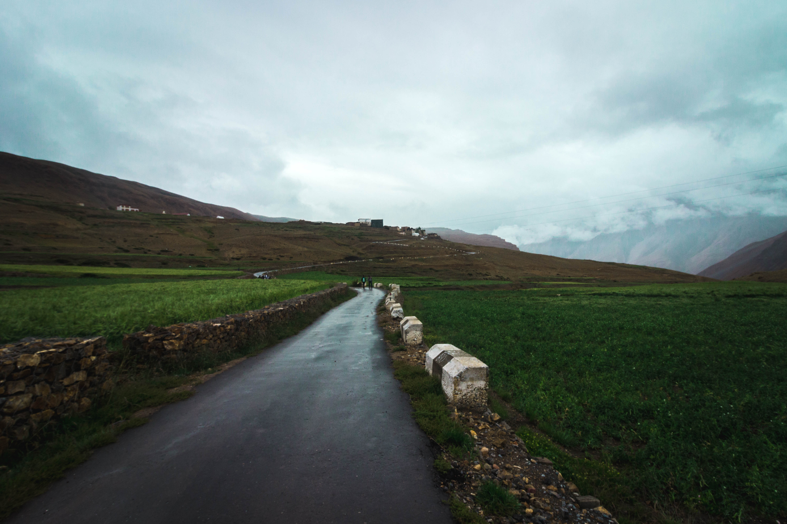
 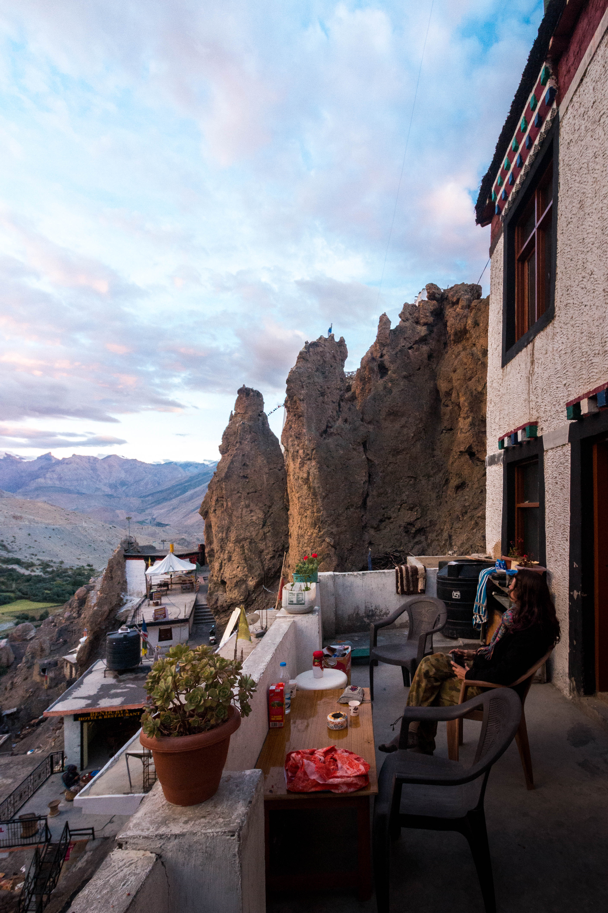
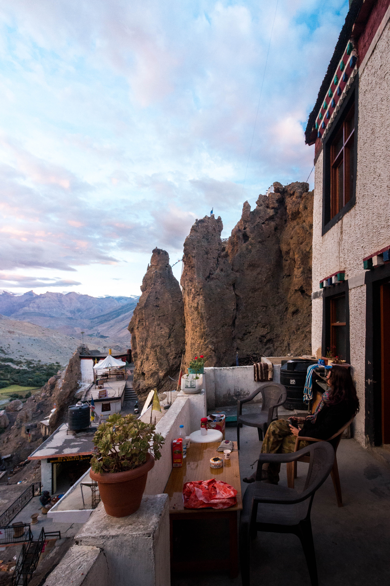
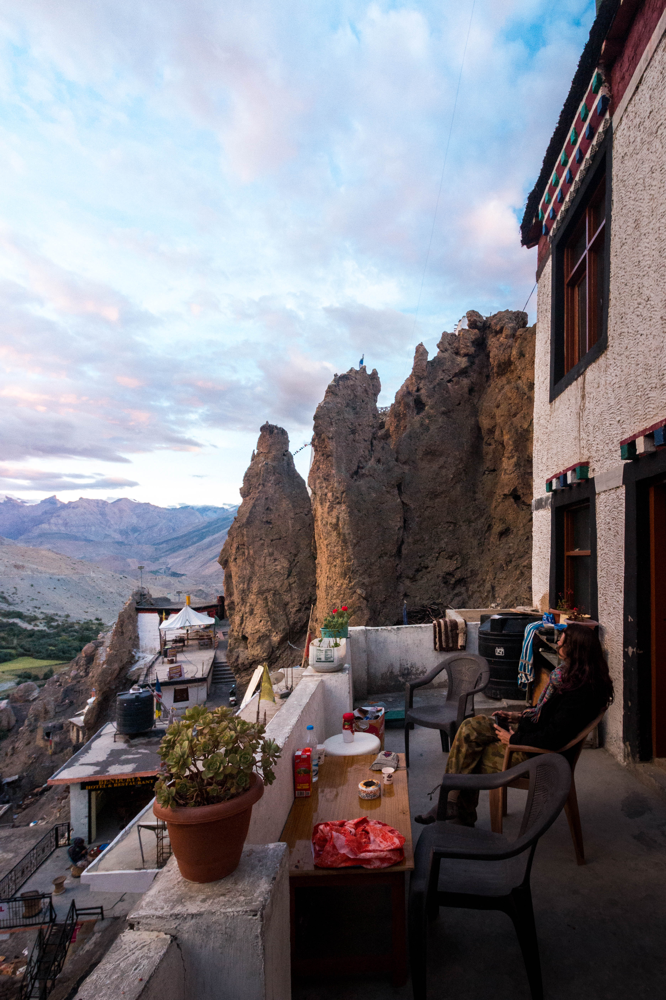
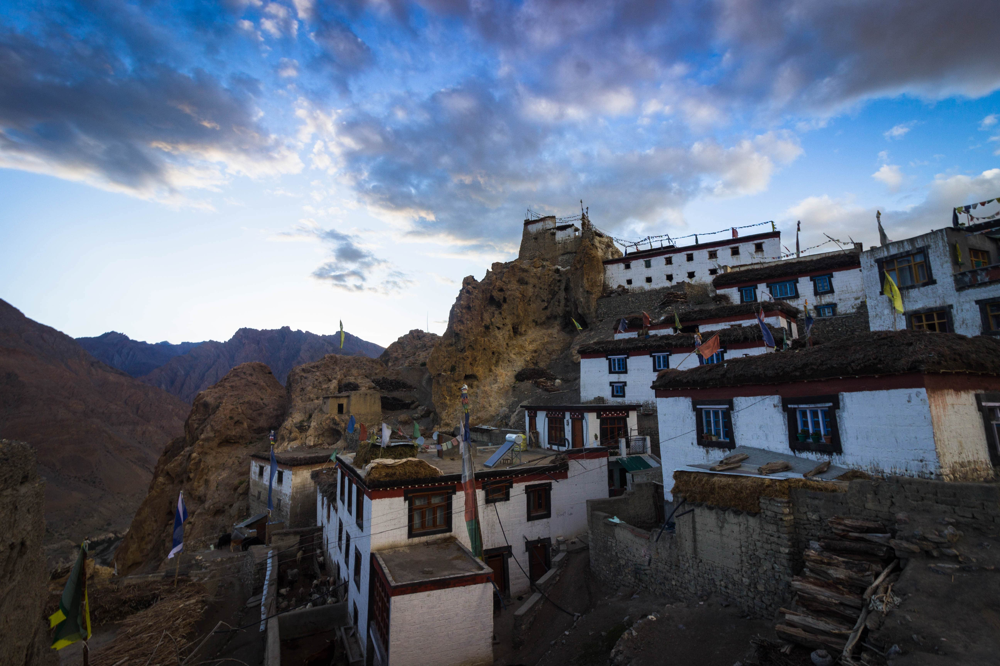
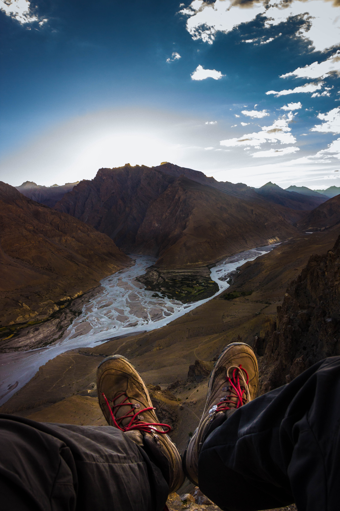
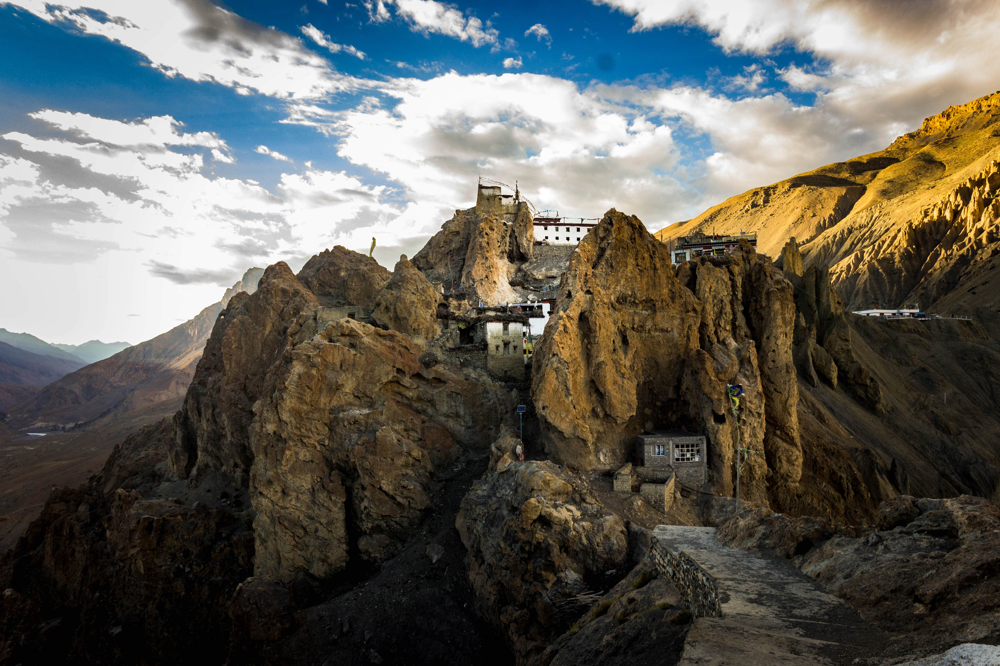
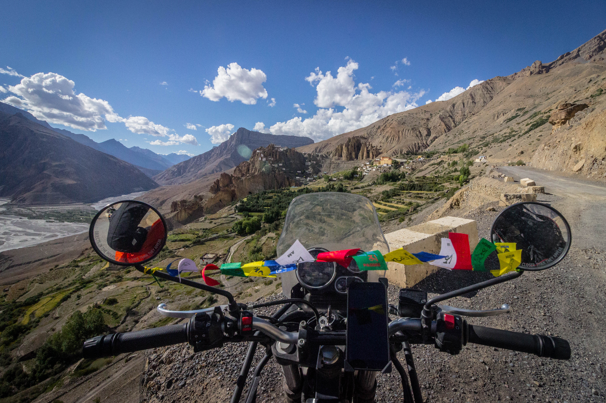
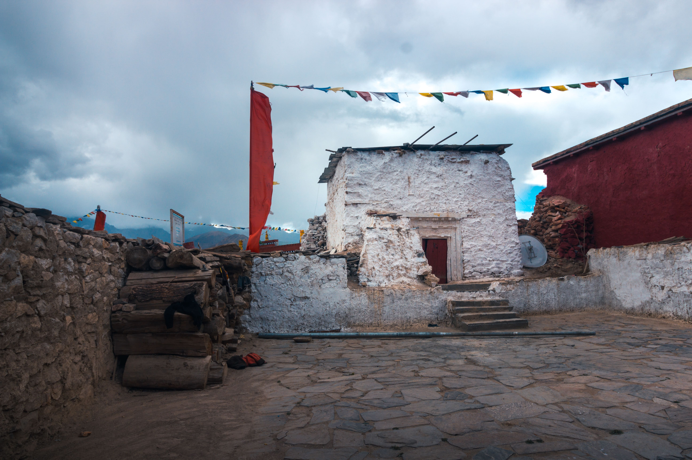
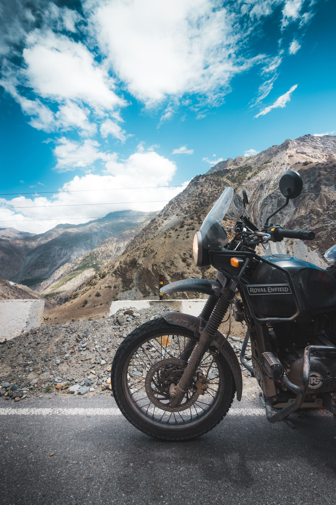
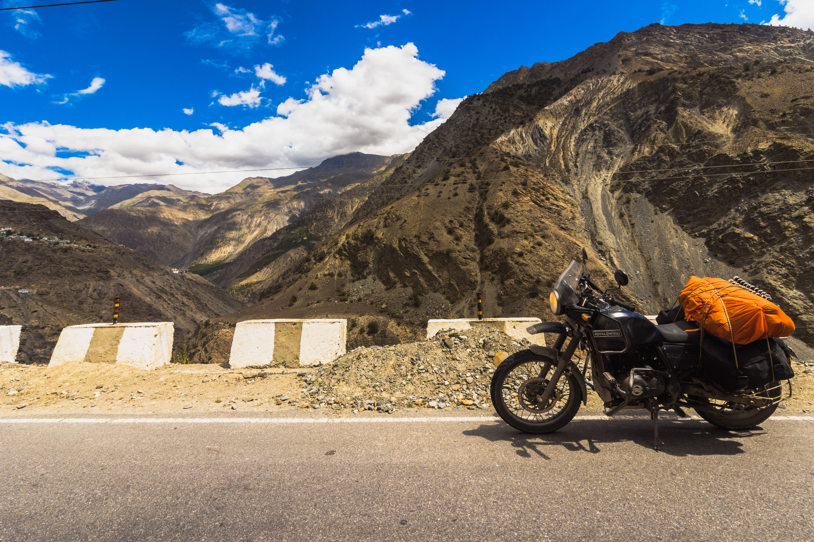
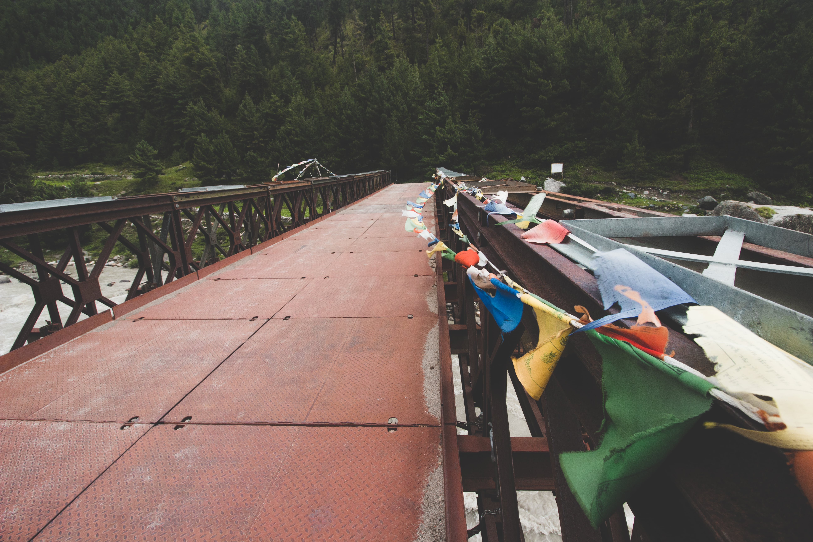
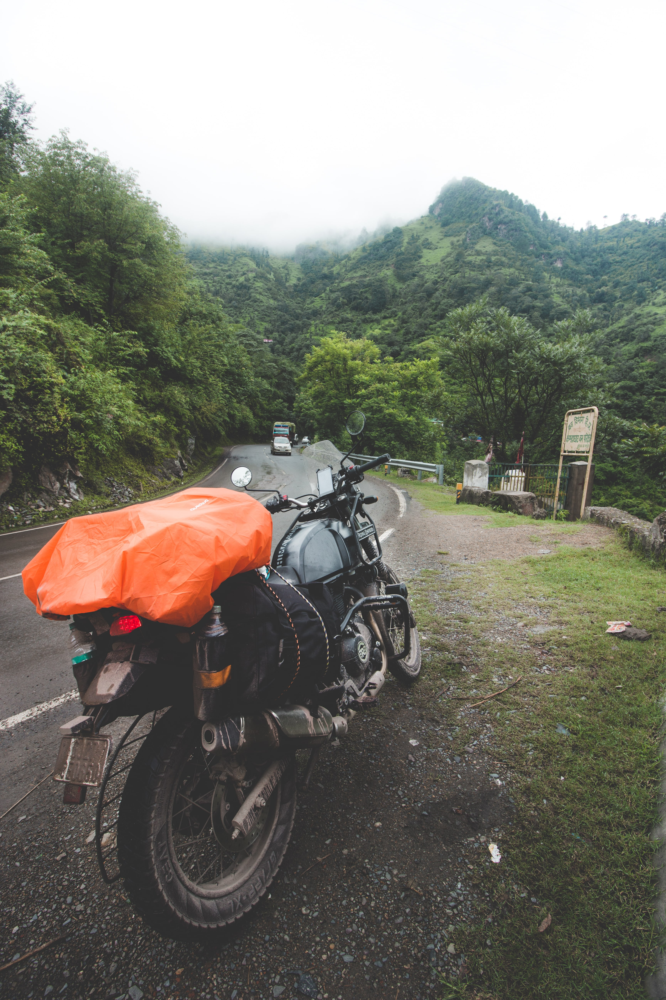